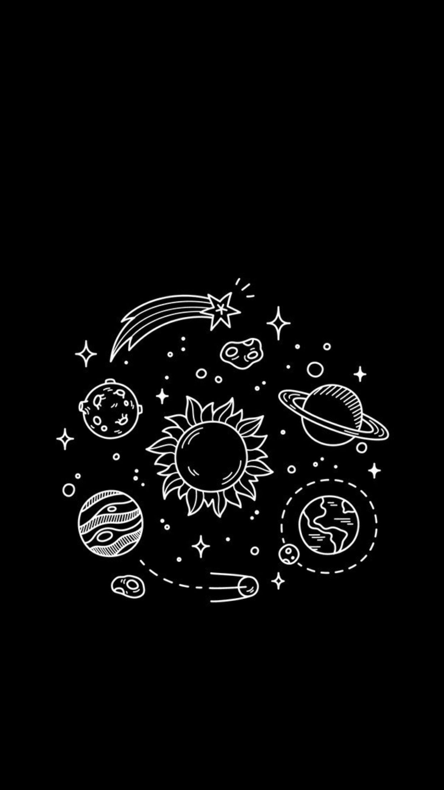

DISEÑADOR & DESARROLLADOR WEB.
Hola, Mi nombre es Andrés Felipe ladino santos, nací en Leticia Amazonas (Colombia) el 27 de abril de 2006, vivo con mi madre y mi hermana en el barrio El Carmen de la ciudad de Bogotá, actualmente me encuentro en la ciudad de Bogotá , Estoy haciendo el curso de Diseño e Integración Multimedia y estoy en el segundo trimestre. De mayor me gustaría ser diseñador y arquitecto profesional, me describo como impulsivo.
- Cumpleaños: 27 april
- Telefono: 3203923908
- Ciudad: bogota,colombia
- Años: 15
- Correo: felipeladino40@gmail.com
HECHOS
Html y css
HTML y css: lo que hacemos en el código es empezar a hacer varias páginas de prueba, como páginas interactivas o páginas no interactivas, como páginas que no requieren botones, agregamos css a todas las páginas para que se vean más atractivas. . . ojos. También vimos Adobe Illustrator y Adobe Photoshop. Hicimos varios proyectos con Illustrator, como Vectorización de varios logotipos de empresas famosas y empresas colombianas. También hicimos ilustraciones de paleta, así como rgb, cmyk y pantone. En Photoshop hicimos y cambiamos el rostro de cualquier imagen en Internet y la foto de tu propio rostro, también hicimos carteles de películas, hicimos montajes estilo comic, usamos doble exposición, low key y high key.
Areas de enfoque
Mis áreas de enfoque incluyen branding, diseño de logotipos, ilustración, creo que soy una persona dinámica, responsable, adaptable, que trabaja en equipo y que puede trabajar bajo alta presión para lograr los objetivos marcados por la empresa. Soy una persona seria, dispuesta a aprender de un equipo de trabajo que sea bueno en la comunicación. Aseguraré un puesto en el campo del diseño gráfico y utilizaré mi formación y experiencia para contribuir a la realización de los objetivos generales de la empresa, con el fin de ganar más experiencia y progreso personal. Pondré en práctica todos los conocimientos adquiridos durante mi formación en el SENA y pasaré a formar parte de un equipo de trabajo que me permitirá desarrollarme personal y profesionalmente.
RESUMEN
Resumen
¡Hola! Soy Andrés Felipe ladino, diseñador gráfico, actualmente estudio en el SENA Diseño e Integración Multimedia, la organización es muy importante en todos los diseños que hago. Mis áreas de enfoque incluyen el diseño de logotipos, ilustraciones y diseño de material de marketing para la implementación de eventos impresos y web.
Define tus metas.
¿Cuál es el valor principal por el que quiere ser recordado?
. Quiero ser recordado por la gente, por algunos diseños geniales en la industria del diseño gráfico y convertirme en uno de los mejores diseñadores.
Educacion
Escuela secundaria & Diseño gráfico
Educación - Formación académica:
- Primaria (completo), Directora: Madre Hermana Rosalía Agradecimientos: una mención de honor.
- Bachillerato en dos instituciones (completo), Director: Jorge Ovalle y Elicio López Flechas. Reconocimientos: campeonato de fútbol medallas "3" una de plata y dos de bronce, mención honorífica.
Graphic Design
2021 - 2022
SENA institucion, cenigraf
. Técnico: Diseño e Integración Multimedia (en curso) . cursos: Uso de Adobe Photoshop.
Experiencia profesional
Trabajé en una papelería pero solo cinco días
habilidades
Diseño gráfico, diseño de logotipos, diseño de identidad, ilustración, animación, diseño de impresión, marketing digital, diseño de iconos, vectorización, edición de fotografías.
Habilidades especificas.
- Manejo del inglés escrito
- Capacidad para negociar
- Habilidades de comunicación